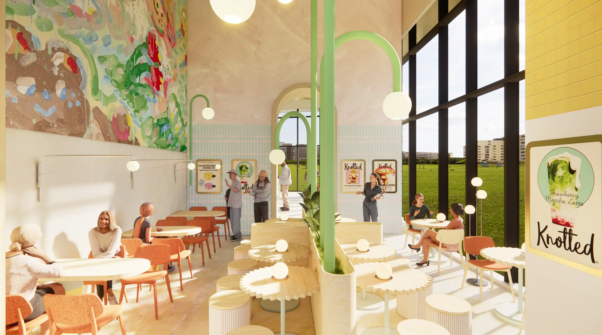
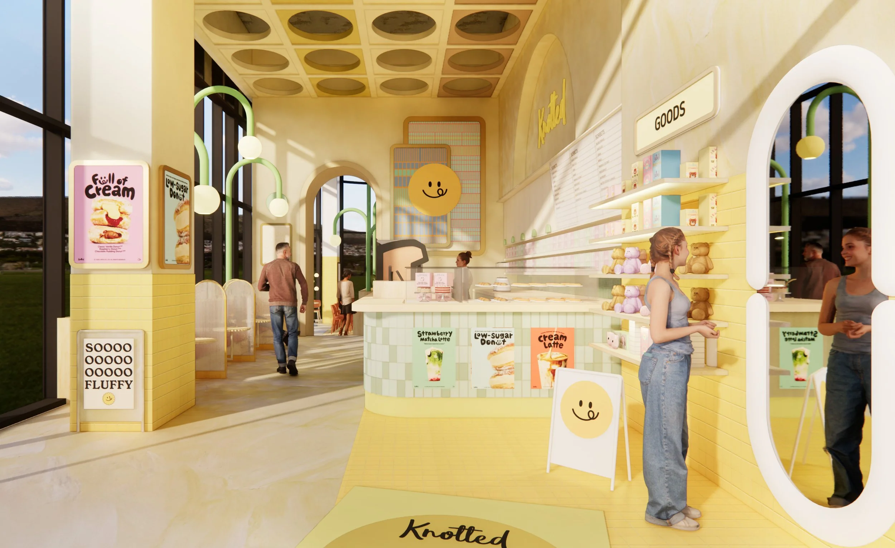
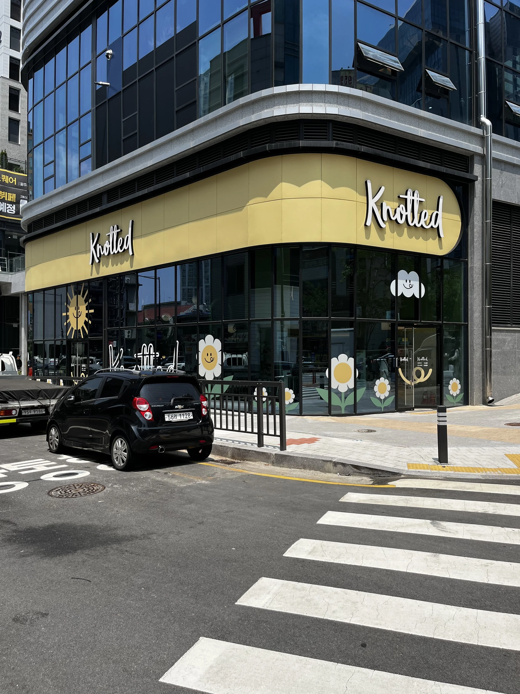
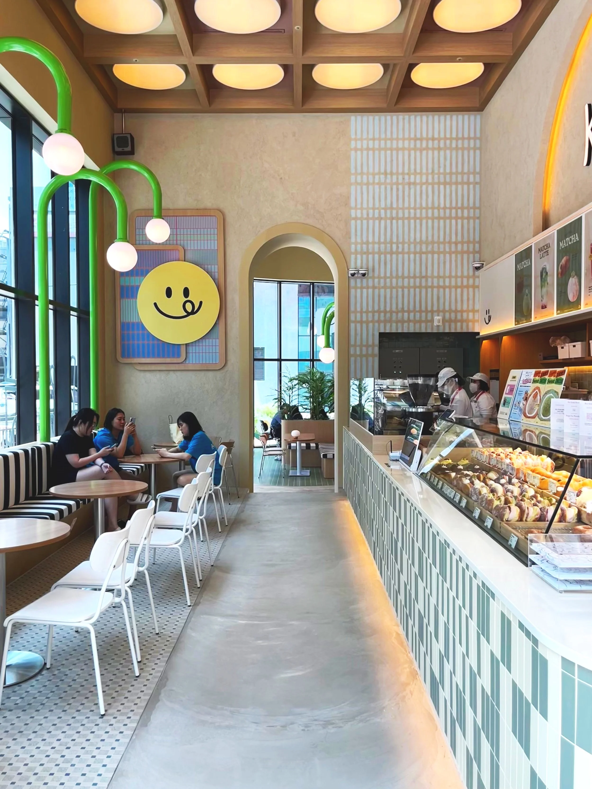
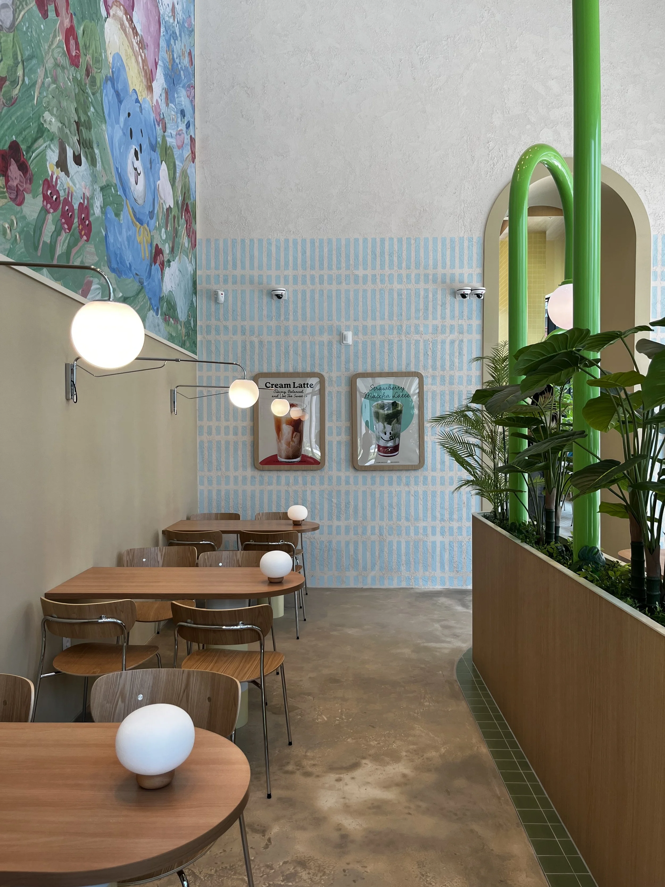
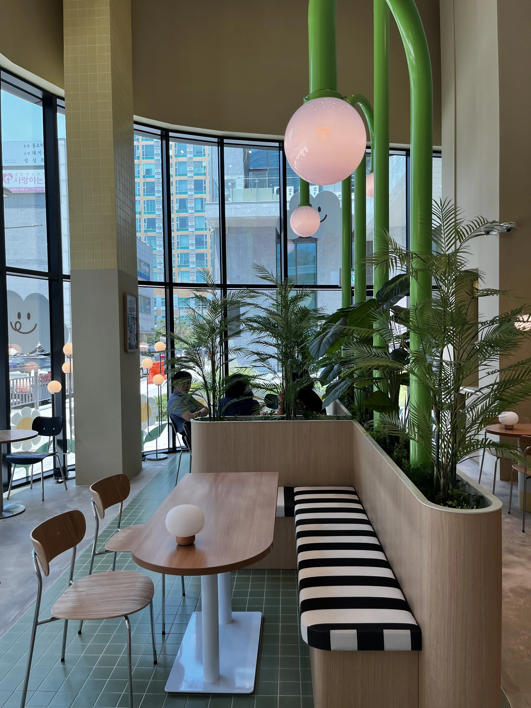
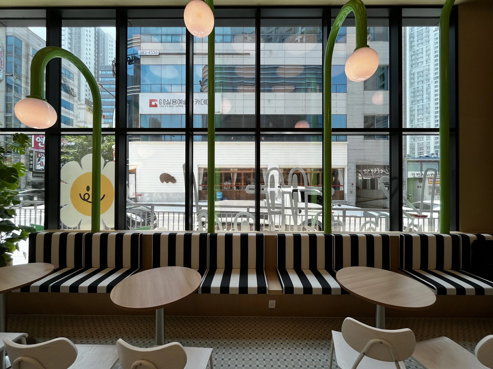
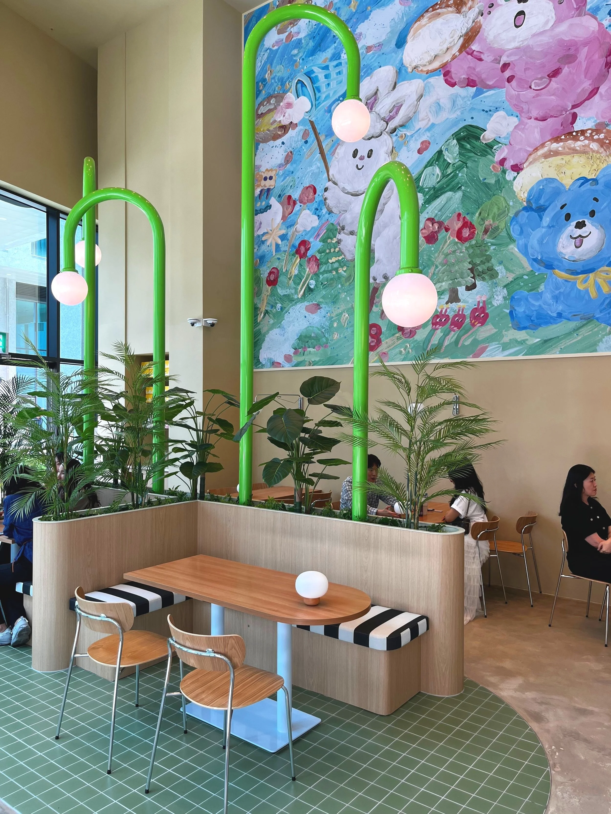

Knotted Gwangju Sangmu
A playful garden, not a copy of the Seoul stores.서울 매장의 복사본이 아닌, 하나의 장난스러운 정원.

- Client
- GFFG
- Location
- Gwangju, Korea
- Year
- 2024
- Role
- Creative Director
- Scope
- Creative direction, spatial storytelling, VMD, artist commission
The brief. Every expanding brand faces the same question: how much of the original do you keep? Knotted in Gwangju Sangmu had to feel like Knotted without becoming a copy of the Seoul stores.
The idea. A playful garden. I held the tone (soft, inviting, generous) and let the materials feel local.
What I did. Creative direction, spatial storytelling and VMD: experimental tiles, custom green lighting structures, planters and seating, and a commissioned mural by the artist Isulro.
브리프. 확장하는 모든 브랜드가 만나는 질문, 원본을 얼마나 유지할 것인가. 광주 상무점은 노티드다우면서도 서울 매장의 복사본이 되어서는 안 됐습니다.
아이디어. 하나의 장난스러운 정원. 부드럽고, 다정하고, 넉넉한 톤은 지키고 재료는 이 지역의 것처럼 느껴지게 했습니다.
역할. 크리에이티브 디렉션, 공간 스토리텔링, VMD. 실험적인 타일 선정, 초록색 커스텀 조명 구조물, 플랜터와 좌석, 그리고 이슬로 작가에게 의뢰한 벽화.
Plan계획
Drawing the garden정원을 그리다
Renderings before construction: the counter and goods wall, and the garden seating under the mural.시공 전 렌더링. 카운터와 굿즈 월, 그리고 벽화 아래 정원 같은 좌석.

As built완공
The garden, open문을 연 정원
The storefront and counter, arched green lamps over tiled floors, striped banquettes along the windows, and the commissioned mural by Isulro above the seating.외관과 카운터, 타일 바닥 위 아치형 초록 조명, 창가의 스트라이프 벤치, 그리고 좌석 위 이슬로 작가의 벽화.





